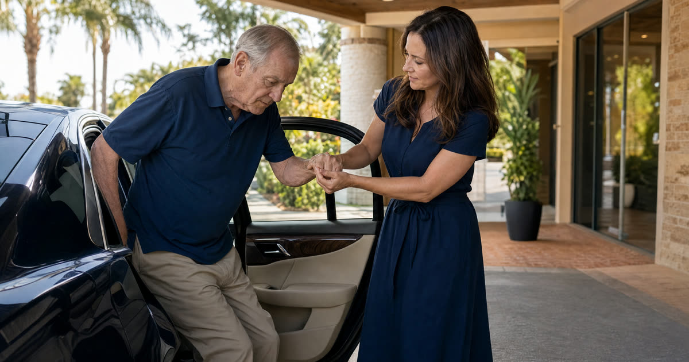

Edna's Garage: One Sedan, One Pickup, One Problem
Edna is 85 and lives in Deltona. She drives a 2015 sedan most days. Parked beside it is her late husband's 2006 pickup, the one he kept washed and maintained until the week he passed. Edna's daughter is helping her apply for Florida Medicaid to help pay for a nursing facility, and someone at the facility mentioned, almost in passing, that "only one car is exempt." That single sentence is what brought Edna's daughter to my office.
Edna is a composite I use to illustrate a problem that comes up constantly in Florida Medicaid planning, not an actual client, but her situation is a faithful stand-in for what real families face. Two vehicles, one clearly exempt, one that needs a decision. The good news is that this is one of the more solvable problems in the entire Medicaid asset picture, as long as the family understands the rules before they act, not after.
Have this exact situation? Talk it through with a Florida attorney — the 20-minute consultation is free.
Book Free Consult or call (888) 388-8445Why One Car Is Automatically Exempt, No Matter Its Value
Florida Medicaid, through the Department of Children and Families' eligibility policy, exempts one automobile completely, regardless of what it's worth. It does not matter if the car is paid off, financed, old, or brand new. As long as it is used for transportation of the applicant or someone in the household, that one vehicle sits entirely outside the countable asset calculation.
For Edna, the 2015 sedan easily qualifies as her one automatic exemption. It is the car she actually drives, it is titled in her name, and nobody at DCF is going to question whether a sedan she uses for groceries and doctor's appointments is her primary vehicle. The analysis, and the real decision, is entirely about the 2006 pickup.
Does the Second Vehicle Get Its Own Exemption?
Florida policy does carve out a second exemption, but it is narrower than people assume. A second vehicle can also be exempt from the asset count if it is more than seven years old and is not a luxury vehicle, an antique, or a customized or specially modified automobile (other than one modified for a person with a disability). A vehicle that is more than roughly 25 years old risks being treated as a classic or antique, which would pull it back into countable status.
This is where Edna's pickup actually works in her favor. A 2006 truck, by the time of an application in 2026, is right in that seven-to-twenty-five-year window. It is not a luxury model and it has not been customized. If the facts hold up, the pickup may already be exempt without Edna having to sell it, trade it, or give it away at all.
If the second vehicle does not fit that exception, perhaps it is newer than seven years, or it turns out to be a model that could be viewed as a luxury vehicle, then its equity value (generally the average trade-in value minus any loan balance) becomes a countable asset, and a decision has to be made.
Three Ways to Handle a Countable Second Vehicle
Assume, for a moment, that Edna's pickup did not qualify for the second-vehicle exception, perhaps it had been a 2020 model instead of a 2006 one. Here are the three paths a Florida family in that position typically considers, worked through in plain terms.
- Option One: Sell at fair market value and spend down properly. Edna sells the truck for a price that reflects its actual trade-in value, not a discounted "family deal." The cash proceeds then count as an asset, so the money has to be spent down through allowable channels, things like prepaying funeral arrangements, paying down debt, or improving the exempt sedan (new tires, a needed repair). The paperwork trail matters enormously here: a bill of sale, proof of the sale price matching fair market value, and bank records showing exactly where the money went. A sale at fair value, properly documented, does not create any transfer penalty, because Medicaid only penalizes transfers made for less than what an asset is worth.
- Option Two: Trade both vehicles toward one newer, exempt vehicle. Edna trades in both the sedan and the pickup and drives off with a single newer car. Because she still ends up owning exactly one vehicle, which remains exempt regardless of its value, this consolidation does not create a penalty, provided the trade-in values are handled at fair market value by the dealer, which is the normal course of any legitimate trade-in transaction. The paperwork here is simpler than a private sale: the dealer's trade-in paperwork and new title serve as the documentation DCF would want to see.
- Option Three: Give the truck away and accept the penalty. Edna gifts the truck to a grandson. Because this is a transfer for less than fair market value, it falls squarely within the five-year lookback period. The truck's fair market value becomes the basis for a transfer penalty, a period of Medicaid ineligibility calculated using the state's penalty divisor applied against the home's or region's average nursing facility cost. For a modest truck, that penalty period is often short, sometimes just weeks, but it is not zero, and the family must be prepared to privately cover the cost of care during that window. This path requires full disclosure on the application, a gift letter or title transfer record, and an honest conversation about the resulting delay.
Titling, the Power of Attorney, and the Community Spouse's Car
Whichever direction a family goes, titling matters. If Edna's daughter is acting under a durable power of attorney to sign a bill of sale, trade-in paperwork, or title transfer on her mother's behalf, that document needs to actually grant authority over vehicle transactions and asset transfers, which most well-drafted Florida powers of attorney do, but it is worth confirming before signing anything at a dealership or with a private buyer.
It is also worth noting, separately, that when there is a healthy spouse remaining at home, often called the community spouse, that spouse's own vehicle is treated independently under Florida's community spouse rules, which Truestead covers in detail elsewhere. Edna is widowed, so that layer does not apply to her, but it is a common wrinkle for married couples working through the same second-car question.
What Edna Decided
In Edna's case, once we confirmed the pickup's age, condition, and the absence of any customization or luxury features, it qualified cleanly for the second-vehicle exemption. No sale, no trade, no gift, and no penalty period were necessary. The truck simply sat outside the countable asset calculation alongside her sedan, and her daughter was able to move forward with the Medicaid application through the Department of Children and Families' ACCESS system without that extra complication. Had the facts been different, had the truck been a few years newer, Edna's family would likely have leaned toward Option One, selling at fair value and using the proceeds to handle a documented, allowable expense, simply because it offered the cleanest paper trail with the least risk of a penalty.
Frequently Asked Questions
The Truestead Takeaway
The second car problem feels bigger than it usually is, because most families hear 'only one car is exempt' and assume the worst before anyone checks the actual age, condition, and title of the second vehicle. Florida's rules give you real room to work with: an automatic exemption for one car of any value, a second exemption for older vehicles that aren't luxury or antique, and, when neither applies, legitimate ways to sell, trade, or even gift a vehicle with full knowledge of the consequences. Edna's situation resolved itself once the facts were checked carefully, but every family's facts are different, and a Florida elder law attorney should review your specific vehicles, titles, and timeline before any sale, trade, or transfer is made.
Sources
- Florida Department of Children and Families, ESS Policy Manual, Section 1640.0591 (vehicle exemption policy)
Have a child turning 18? Get the free 18 & Protected packet — the legal documents every Florida 18-year-old needs.
Get the Free PacketTalk to a Florida Attorney
Every family’s situation is different. Schedule a consultation with Arthur Simpson, Esq. to review your plan and your options under Florida law.
Schedule a Consultation →This article is for general informational purposes only and does not constitute legal advice, nor does reading it create an attorney-client relationship. Florida estate, elder, probate, and real estate law are fact-specific and change over time. Consult a licensed Florida attorney about your individual circumstances. Arthur Simpson, Esq. is licensed to practice law in the State of Florida. Attorney advertising.
Talk to a Florida Attorney — Free 20-Minute Consultation
Pick a time below. No obligation, no pressure — just answers.